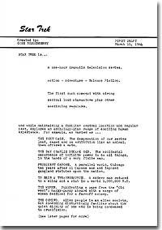

|
por Salvador Nogueira
O site americano
Trek5 conseguiu colocar no ar um documento histrico: a ntegra do conceito de
Jornada nas Estrelas redigido por Gene Roddenberry e apresentado MGM em 1964. Com 16 pginas, essa a primeira formalizao por escrito das idias de Gene para a srie, contendo muitas das razes que acabaram se manifestando ao longo dos trs anos de produo.
Trechos desse documento j estavam disponveis no livro "Star Trek Compendium" (lanado no Brasil com o ttulo "Jornada nas Estrelas Compendium"), de Allan Asherman, mas nunca o material escrito por Roddenberry em 1964 havia sido levado ao pblico por completo.

Se quiser descarregar a verso original, em formato PDF ( preciso ter o programa Adobe Acrobat Reader, que voc pode obter
aqui), com 993Kb, clique aqui. E confira logo abaixo a traduo para o portugus dessa verdadeira relquia da franquia.
Jornada nas Estrelas
Criada por:
GENE RODDENBERRY
PRIMEIRO RASCUNHO
11 de maro de 1964
JORNADA NAS ESTRELAS ...
Uma srie dramtica de uma hora.
Ao - Aventura - Fico Cientfica.
O primeiro conceito com personagens centrais fortes e outros regulares recorrentes.
E, enquanto mantm uma locao familiar central e um elenco regular, explora um espectro antolgico de empolgantes experincias humanas. Por exemplo, to variadas como ...
A PRXIMA JAULA. O desespero de nosso lder da srie, enjaulado e em exibio como um animal, e ento ofertado com uma parceira.
O DIA EM QUE CHARLIE SE TORNOU DEUS. A ocorrncia acidental de poder infinito para fazer todas as coisas, nas mos de um homem bem finito.
PRESIDENTE CAPONE. Um mundo paralelo, Chicago dez anos aps a vitria de Al Capone e sua imposio de estatutos gngsters sobre a nao.
PARA ESFOLAR UM TIRANOSSAURO. Um homem moderno reduzido a uma funda e uma clava em um mundo 1.000.000 a.C.
AS MULHERES. Duplicando uma pgina do "Velho Oeste"; brigas e intrigas a bordo com uma carga de mulheres para uma colnia distante.
A CHEGADA. Um povo aliengena em uma sociedade aliengena, mas algo incomodamente familiar sobre a quieta dignidade de um que est sendo condenado crucifixo.
(Vejas as prximas pginas para mais)
JORNADA NAS ESTRELAS oferece um nmero quase infinito de empolgantes histrias de fico cientfica, completamente prticas para televiso. Como? Os astrnomos expressam desse modo:
Ff2 (MgE) - C1Ri1 x M = L/So
Ou, para colocar em termos mais simples, ao multiplicar os 400.000.000.000 de galxias (aglomerados estelares) nos cus por uma estimativa da mdia de estrelas por galxia (7.700.000.000.000.000.000.000.000.000.000.000), temos o nmero aproximado de estrelas no universo, como o entendemos agora. E ento...
...se apenas uma em um bilho dessas estrelas for um "sol" com um planeta...
...e apenas uma em um bilho desses for de tamanho e composio da Terra...
...ainda haveria algo prximo de 2.800.000.000.000.000.000.000.000.000 mundos com um potencial de vida de oxignio-carbono...
...ou (pelas mais conservadoras estimativas de probabilidade qumica e orgnica), algo como trs milhes de mundos com uma chance de vida inteligente e evoluo social similar nossa.
Ou, para colocar em uma linguagem da televiso...
JORNADA NAS ESTRELAS um conceito "Caravana" -- construdo em torno de personagens que viajam para mundos "similares" ao nosso e encontram a ao, a aventura e o drama que se tornam nossas histrias. Seu meio de transporte a nave "S.S. Yorktown", realizando uma misso de Explorao-Cincia-Segurana bem definida e de longo alcance que ajuda a criar nosso formato.
A poca "Algum lugar no futuro". Poderia ser 1995 ou mesmo 2995. Em outras palavras, perto o suficiente do nosso prprio tempo para nossos personagens contnuos serem totalmente identificados como pessoas como ns, mas longe o suficiente no futuro para a viagem galctica ser totalmente estabelecida (alegremente eliminando a necessidade de amontoar nossas histrias com cansativas explicaes cientficas).
O conceito de Mundos Paralelos a chave...
...para nosso formato de JORNADA NAS ESTRELAS. Significa simplesmente que nossas histrias lidam com vida animal e vegetal, mais pessoas, bem similares s que temos na Terra. A evoluo social tambm ter interessantes pontos de similaridade com a nossa. Haver diferenas, claro, indo das sutis s audaciosamente dramticas, de onde deve vir muita da nossa cor e empolgao. (E, claro, nada disso nos probe de uma histria ocasional bem longe da nossa jogada para surpreender e mudar o ritmo.)
O conceito de Mundos Paralelos torna a produo exeqvel ao permitir fico cientfica de ao e aventura com um valor de oramento prtico pelo uso de, entre outros, elencos, cenrios, locaes e figurinos terrestres disponveis.
To importante quanto (e talvez at mais, em tantos modos), o conceito de Mundos Paralelos tende a manter at as histrias mais imaginativas dentro do quadro de referncia geral da audincia, atravs de elencos, cenrios e figurinos reconhecveis e identificveis.
PERSONAGEM PRINCIPAL
Robert M. April
O capito do time, cerca de 34 anos, graduado da Academia, posto de Capito. Claramente o lder e personagem central. Esse papel designado para um ator de grande reputao e habilidade. Um curto esboo de Robert April poderia ser Um Capito Horatio Hornblower da era espacial, em forma e capaz tanto mentalmente quanto fisicamente.
O capito April ser o foco de muitas histrias - embora em outras ele possa nos levar introduo da estrela convidada em torno da qual a histria se concentre.
Uma personalidade complexa e colorida, ele capaz de ao e deciso que podem se aproximar do herosmo - e ao mesmo tempo viver uma contnua batalha com insegurana e a solido do comando.
Como em homens similares no passado (Drake, Cook, Bougainville e Scott), sua fraqueza primria uma predileo pela ao administrao, uma tentao de assumir os maiores riscos por si mesmo. Mas, diferente da maioria dos exploradores pioneiros, ele tem uma compaixo quase compulsiva pelo sofrimento alheio, seja aliengena ou humano, e precisa continuamente lutar contra a tentao de arriscar muitos para salvar um.
OUTROS PERSONAGENS REGULARES
A Oficial Executiva --
Nunca chamada de outra coisa seno "Nmero Um", essa oficial mulher. Quase misteriosamente feminina, na verdade -- esbelta e sombria de um modo Vale do Nilo, idade incerta, uma dessas mulheres que ir sempre parecer igual entre os 20 e os 50 anos. Uma oficial extraordinariamente eficiente, "Nmero Um" gosta de se mostrar inexpressiva, fria -- provavelmente superior a Robert April em conhecimento detalhado dos mltiplos sistemas de equipamentos, departamentos e tripulantes a bordo da nave. Quando o capito April deixa o veculo, a "Nmero Um" torna-se comandante interina.
O Navegador --
Jos Ortegas, nascido na Amrica do Sul, alto, bonito, cerca de 25 anos e brilhante, mas ainda em processo de amadurecimento. Ele cheio de humor e temperamento latinos. Ele trava uma batalha perptua e altamente pessoal com seus instrumentos e calculadores, suspeitando de que o espao, e provavelmente Deus tambm, esto engajados em uma conspirao gigante para fazer sua viad profissional e pessoal to difcil e desconfortvel quanto possvel. Jos est sofrivelmente ciente da reputao histrica dos latinos como amantes -- e est em perigo de fracassar nessa ambio numa escala csmica.
O Mdico da Nave --
Phillip Boyce, um improvvel viajante espacial. Com idade de 51, ele global e inspiradamente cnico e faz questo de se entreter totalmente com suas prprias fraquezas. O nico real confidente do capito April, "Bones" Boyce se considera o nico realista a bordo, mede cada novo pouso em termos de incmodo relativo, em vez de empolgao.
O Primeiro Tenente --
O brao direito do capito, o comandante de nvel funcional de todas as funes da nave desde a administrao da ponte superviso do menor e mais baixo detalhe. Seu nome "Sr. Spock". E sua primeira viso dele pode ser quase assustadora --uma face to pesada e satnica que voc quase poderia esperar que ele tivesse um tridente. Provavelmente meio Marciano, ele tem um complexo levemente avermelhada e orelhas semi-pontudas. Mas estranhamente -- o temperamento calmo do Sr. Spock um contrate dramtico a sua aparncia satnica. De toda a tripulao a bordo, ele o mais prximo de ser um igual do capito April, fsica e emocionalmente, como um comandante de homens. Sua fraqueza maior uma curiosidade quase felina sobre qualquer coisa sutilmente "aliengena".
A Ordenana do Capito --
Exceto por problemas no vocabulrio naval, "Colt" deveria ser chamada de "yeowoman"; loira e com formas que nem um uniforme pode esconder. Ela serve como secretria, reprter e bibliotecria de April, e sem dvida gostaria de servi-lo em departamentos mais pessoais. Ela no boba; ela muito feminina, perturbadoramente feminina.
Extrado das ordens do capito Robert M. April:
-------------------------------------------------------------
III. Voc est doravante designado, efetivao imediata, para comandar a seguinte: A S.S. Yorktown.
Classe Cruiser -- Massa 190.000 tons
Tripulao -- 203 pessoas
Propulso -- dobra-espacial (mxima velocidade de 0,73 ano-luz por hora)
Alcance -- 18 anos em velocidades de patrulha galctica
Registro -- Terra, United Space Ship
IV. Natureza e durao do comando:
Explorao da galxia e investigao Classe M: 5 anos
V. Voc ir patrulhar o nono quadrante, comeando por Alfa Centauri e indo at o limite pinial exterior da galxia.
VI. Voc ir conduzir essa patrulha para realizar primariamente:
(a) Segurana da Terra, via explorao de inteligncias e sistemas sociais capazes de uma ameaa galctica, e
(b) Investigao cientfica para adicionaro o corpo de conhecimento da Terra de formas de vida e sistemas sociais, e
(c) Dar qualquer assistncia requerida s vrias colnias terrestres nesse quadrante, e exercer os estatudos apropriados que afetam essas naves federadas de comrcio e mercadores que voc possa contatar no curso de sua misso.
VII. Consistente com o equipamento e as limitaes de sua nave da classe Cruiser, voc ir confinar seus pousos e contatos a planetas com condies, vida e ordem social similares s de Terra-Marte.
Algumas consideraes de formato e oramento...
CENRIOS. Nosso formato talhado para produo prtica e fatores de custo. Uso de cenrios de palco, cenografia externa e outras locaes simplificado pelas ordens "Classe M" do capito April. E nosso prprio conceito de "Mundos Paralelos". A maioria das permissas de histrias listadas podem ser obtidas em locais de cenografia externa de estdio comuns e em cenrios como a Rua do Incio dos 1900, a Vila Oriental, Cowtown, Forte da Fronteira, Sala de Desenho Vitoriana, Floresta e Margem de Rio.
PALCOS. A incrvel latitude inerente das histrias no conceito tambm serve a consideraes prticas ao permitir adaptaes razoavelmente simples de histrias para encaix-las as construes atuais do estdio. Por exemplo, interiores e exteriores temporariamente disponveis aps um filme "Egpcio", um pico de "horror", ou mesmo um telefilme incomum, poderiam ser usados para atender s necessidades de um nmero de premissas de histria listadas aqui.
USO SEGUIDO DE CENRIOS E LOCAIS. Onde as condies de um cenrio ou uma locao particularmente vantajosos ocorrerem, ou onde um "mundo" particularmente empolgante for criado, JORNADA NAS ESTRELAS pode faze trs ou quatro histrias l.
A NAVE. A "S.S. Yorktown" , claro, um cenrio fixo a ser amortizado durante a vida da srie. Para economizar, o cenrio bsico ser projetado de forma que todas as cabines, salas de oficias e passagens possam ser readereadas e reutilizadas.
ATERRISSAGENS. A nave ficar em rbita no espao, raramente pousando em um planeta. Aterrissagens so feitas por um pequeno (e transportvel) veculo foguete de reconhecimento. Geralmente, a viso da audincia das aterrissagens e aparies sero aquelas da tripulao da controle, ou seja, por instrumentos ou em uma "tela" (permitindo o uso de filmes em estoque selecionados). Tambm para economia, as cenas de miniaturizao da nave ser planejadas para uso mximo, tambm amortizadas durante a vida da srie.
ELENCO. Embora seja bobo dizer que nunca faremos um episdio de "monstro", a maioria da escalao do elenco ser bem rotineira. Quando requeridas, variaes "aliengenas" sero obtidas via enchimentos, perucas e artefatos simples de maquiagem. Mas, novamente, nosso formato geral se mantm "Mundos Paralelos" e (como sempre em drama de qualidade) as mais incomuns, exticas e chocantemente empolgantes diferenas sempre vm da ao e da reao.
LINGUAGEM. Estabelecemos um aparelho "telecomunicador" no incio da srie, um pouco mais complicado do que um pequeno radio transistor carregado em um bolso. Um simples "desmisturador de via dupla", parece converter todas as lnguas faladas para o ingls.
ARMAMENTO. Igualmente bsico e simplificado. A nave est armada com raios laser apenas para auto-proteo. Armas portteis da tripulao so rifles e pistolas com um ajuste e iro disparar simples balas, projteis explosivos ou partculas hipodrmicas que iro tontear ou tranquilizar. Armamento aliengena, porque a gravidade e as condies minerais e vegetais sero similares s da Terra, seguir um padro geral terrestre. Vai de arpes, arcos, espadas e lanas a variaes de armas de fogo. De vez em quando, claro, podemos oferecer uma variao surpresa, como um civilizao bem avanada que ainda usa armaduras feudais e espadas como modo de vida.
FIGURINO. Vestimentas aliengenas so basicamente reconhecveis, ou seja, tambm seguem o conceito de "Mundos Paralelos". Tipos pastorais, indgenas ou vikings de aliengenas iriam gerar roupas prximas daquelas vestidas em perodos similares em nossa prpria evoluo social. Uniformes da tripulao so "navais" em aparncia geral, atrativamente simplificados e utilitrios. Novamente, variaes surpresa so possveis tambm.
Dados sobre a SS Yorktown ...
Como com a Dodge City de GUNSMOKE, ou o Hospital Geral Blair de KILDARE, podemos nunca acabar explorando todas as cabines, departamentos e frestas de nossa nave. A questo -- trata-se de uma comunidade inteira em que podemos a qualquer momento levar nossa cmera por uma passagem e encontrar um ator convidado ou personagem secundrio (cientista, especialista, tripulante comum, passageiro ou clandestino) que pode nos propelir a uma histria.
De vez em quando uma histria ir acontecer exclusivamente na Yorktown, como por exemplo no enredo em que uma estranha "inteligncia" conseguiu vir a bordo e est trabalhando para dominar as mentes de certos tripulantes-chave. Ou o transporte de uma pessoa ou um material que oferece um perigo crescente para a nave e nossos personagens.
A construo interior utilitria em vez de extico, com algumas poucas indicaes apropriadas de controles avanados e instrumentos. H galerias, salas de recreao, uma biblioteca, uma unidade hospitalar e laboratrios cientficos, alm de tens esperados como a ponte, a sala de comunicao e os aposentos dos tripulantes, sempre com um suave sabor naval.
Outros trampolins para histrias...
O MUNDO PERFEITO. Aterrissando nesse planeta particular, o capito April e a equipe de reconhecimento de JORNADA NAS ESTRELAS encontram uma civilizao similar Terra por volta de 1964. Mas com algumas incomuns excees -- aparente ordem perfeita, sem crime, sem problemas sociais, sem fome ou doena, um lugar de pessoas completamente ajustadas e charmosas. Na verdade, to agradveis e ordeiras que algo tem de estar errado. A investigao nessa direo mostra Robert April capturados e submetido a incrvel barbarismo policial, at mais chocante pelo contraste. Apenas lentamente fica claro que nossos viajantes descobrem que toparam num exemplo similar novela "1984", mas com todas as arestas aparadas, ou seja, completamente eficiente, tambm um comunismo completamente desptico levado ao extremo.
MR. SOCRATES. O mais incomum mundo no Universo, uma sociedade secretamente em contato teleptico com a Terra por sculos, selecionando e duplicando em formas de vida inteligentes os mais incomuns intelectos produzidos pela histria da humanidade. Em uma nica rua algum poderia encontrar pessoas como Jlio Csar, Napoleo, Florence Nightingale, Gngis Khan, Thomas Jefferson, Carry Nation e Adolf Hitler. O que a princpio parece ser pura fantasia aos protagonistas de JORNADA NAS ESTRELAS, rapidamente se torna um jogo muito real e mortal quando eles comeam a perceber que essa uma forma do "Coliseu Romano", em que os participantes so todos "Gladiadores", as apostas so vida e morte, e os jogos esto para comear.
O ESTRANHO. Aps decolar de um planeta, a SS Yorktown segue para outro planeta no mesmo sistema solar. No antes disso comea a ficar claro que uma inteligncia aliengena conseguiu vir a bordo com o objetivo de dominar as mentes de tripulantes-chave -- visando a usar nossa nave para atacar uma civilizao rival no outro planeta. Na verdade uma histria de "terror", ns enfatizamos a sutileza desse ataque sobre a inteligncia, atingindo um ponto em que as suspeitas mtuas ameaam a nave inteira.
A ARMADILHA HUMANA. Uma histria de travessia desrtica, levando membros de nosso grupo de um ponto de um planeta a outro. Mas o que parece ser um planeta como a Terra e totalmente inofensivo rapidamente se transforma em cem milhas de medo e suspeita, conforme o capito April e tripulantes comeam a encontrar estranhas aparies. Na verdade mais que aparies, essas so prazeirosas armadilhas que se tornam to reais quanto carne e osso. O que quer que um homem queira ir aparecer diante dele, como gua, comida, uma mulher, um parente h muito perdido, ouro ou at uma forma de tomar o poder. As armadilhas ficam cada vez mais sutis, a ponto de nossa tripulao quase nos destruir pela total inabilidade de separar a realidade que eles devem ter das aparies que vo destru-la.
CAMELOT REVISITADO. O planeta de Hermes II, uma ordem social incrvel que vastamente moderna em muitos aspectos, mas retm a cavalaria, armaduras e outras caractersticas similares Idade Mdia. Um toque de "A Connecticul Yankee in King Arthur's Court". Quando nossos viajantes estelares param brevemente para investigar e ento se tornam cada vez mais envolvidos numa rede de prticas sociais arcaicas, a ponto de alcanar o momento em que esto envolvidos demais em jogos de lana e espada para preservarem as prprias peles.
100 A.B. Ou, "Um Sculo Aps a Bomba" -- um paralelo assustador em que examinamos o que pode ser nosso prprio mundo algumas dcadas aps um holocausto atmico.
KENTUCKY, KENTUCKY. Uma colnia terrestre em um planeta no grupo Sirius visitada pela SS Yorktown cinquenta anos aps a colonizao. Um ataque por selvagens de estilo Viking destruiu e espalhou os colonos, reduzindo eles a uma vida de forte de madeira na "fronteira". No disposto a arriscar a SS Yorktown, o capito Robert April tenta, com um pequeno grupo, reagrupar e liderar os colonos em defesa.
RAZO. No grupo Isaac IV, um mundo em que a vida inteligente morreu, deixando uma socidade robtica perfeitamente funcional. Um problema h muito especulado na Terra, isso requer detalhada investigao e anlise, mesmo que seja arriscando o grupo de reconhecimento da nave fingindo serem eles mesmos robs. Pode um rob ser capaz de sentimento emocional? Pode ser capaz de racionalizar em termos humanos? O que acontece quando uma sociedade robtica eficiente descobre espies de carne e osso entre eles?
REASON II. Uma extenso, possivelmente a segunda parte da histria anterior, mostrando a luta dos ltimos sobreviventes humanos, ajudados pelo grupo de reconhecimento de nossa nave, em nmero inferior e relativamente indefesos enquanto tentam retomar o controle de seu planeta. Pode um homem, spero e desmoralizado, ainda ser um mestre?
UMA QUESTO DE ESCOLHA. Outra histria de armadilha, ou seja, um planeta em que a vida inteligente no atingiu grande sucesso material mas em vez disso aprendeu o poder de viver e reviver de novo e de novo em modos diferentes qualquer parte de sua vida passada que queira. Esse um veculo para o estrelato do capito Robert M. April, quando ele introduzido chance de fazer certas coisas de novo e de novo.
O RADIANTE. Uma histria de amor, a paixo de um tripulante por uma mulher angelical em um planeta "Jardim do den" -- com o nico detalhe de sua qumica incluir rdio em quantidade letal. O homem que se tornou sua amante poderia viver de seis semanas a seis meses, e no mais.
UMA QUESTO DE CANIBALISMO. Visitando a colnia terrestre em Regulus, o grupo de descida de April fica sabendo que criaturas similares a vacas criadas em fazendas so na verdade seres inteligentes. Mas os colonos, que construram seu imprio basicamente no suprimento e na venda dessa carne, se rebela contra a tentativa de libertar seu "gado".
O ESPELHO. Quase coliso com outra Yorktown em um curso exatamente oposto. No s a mesma nave, mas tripulada exatamente pela mesma tripulao. Poderia voc encarar voc mesmo aps descobrir que sua sobrevivncia depende de matar a si mesmo?
TORX. A primeira grande ameaa Terra. Uma inteligncia aliengena, dizendo ser puro pensamento sem corpo, que "devora" inteligncias, deixando para trs um idiota sem salvao. Perto da inanio por ons, esteve procurando freneticamente exatamente o tipo de "comida" que a Terra poderia fornecer em quantidade.
A LOJA DE ANIMAIS. Exatamente duplicando a St. Louis, 1916, uma cidade em que as mulheres so to completamente mestras que os homens tm o status de animais de estimao. Algo como uma stira sobre "pessoas e ces", essa histria mostra homens tratados desse modo, presos em canis, outros vestidos e perfumados e tratados como cezinhos de madame, contanto que continuem a adular, apreciar e amar altruisticamente.
KONGO. Nos "Vellhos Tempos da Plantation" do Sul, com a ligeira exceo de serem brancos selvagens os embarcados e vendidos no mercado de escravos. Parte de nossa tripulao aprisionada, so identificados como fugitivos e vendidos como mo-de-obra domstica e para plantation.
O PLANETA VNUS. O processo de evoluo social aqui centrado no amor -- e os membros homens da nossa muito humana tripulao encontram o que parece ser o mximo em satisfao amorosa nas artes perfeitamente desenvolvidas desse lugar com mulheres incrivelmente bonitas. At que comeam a imaginar o que aconteceu com todos os homens l.
INFECO. Uma tripulante mulher descobre que est grvida e tem a crescente percepo de que poderia ser a larva de um aliengena, usando seu corpo como alguns insetos que plantam seus ovos em outros insetos vivos.
|